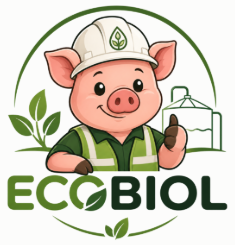

Dimensiona el tratamiento de porcinaza de tu granja

Una herramienta de apoyo para su diseño y aprovechamiento seguro
ComenzarEsta herramienta fue realizada bajo el proyecto “Elaboración de una guía de buenas prácticas ambientales para el control y prevención de la contaminación de las aguas subterráneas asociada a la aplicación de porcinaza en zonas de interés hidrogeológico de los departamentos de Caldas y Quindío.”